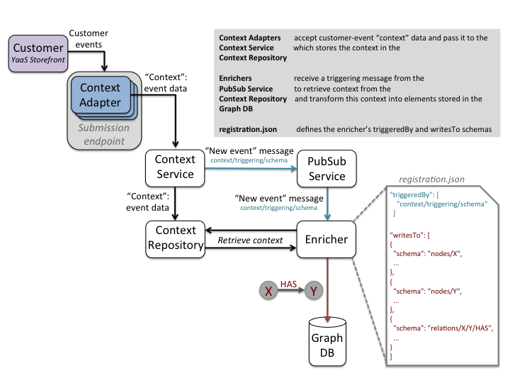

Writing a Locally-Hosted Enricher

Prerequisites
The following are prerequisites for running your own enricher locally:
- A java 8 sdk must be installed (Installation instructions can be found here)
- A builder module must be registered in your builder.yaas.io project to expose your local enricher to YaaS services:
- Browse to your project in Builder
- Click Builder Modules in the left-hand navigation column
- Click +BUILDER MODULE and click NEXT
- Select the following Required Scopes:
- hybris.profile_graph_manage
- hybris.profile_graph_view
- hybris.profile_context_manage
- hybris.profile_context_view
- hybris.pubsub.topic=hybris.profile-dispatcher.{hybris-client}
- Click NEXT and fill out required fields. Note: For Module Location, enter: 'https://dummy-builder.us-east.cf.yaas.io/builder/module.json'
- Click SAVE
The local-enricher directory that was included on your flash drive contains:
- A consumption API Java library that enables the reading of stored context messages
- A graph API Java library that enables writing to and reading from the graph
- An example Java driver class hybris.yprofile.hackathon.Enricher that demonstrates the use of the above consumption and graph APIs.
- An example graph schema definition named sample-registration.json that defines a simple graph node type and node relationship. To enable your custom enricher to create new entities in the graph, submit a similar JSON file to the YaaS Hackathon representatives for registration.
See this documentation for details about schema definitions.
Getting started
- In Builder, browse to your project, click Clients in the left-hand navigation column, and open your Client. In src/main/resources/ of the local-enricher directory, edit the ‘modify-me.properties’ file as follows:
- Replace <Identifier> with the Identifier value of your Builder Client
- Replace <Client ID> with the Client ID value of your Builder Client
- Replace <Client Secret> with the Client Secret value of your Builder Client
- Start the provided default enricher by executing the following command from the local-enricher directory. You will also use this command to start your customized enricher.
./gradlew run
- When you browse to your local YaaS storefront, the following elements will be created in the graph:
- A Session node
- A HelloWorld node
- A HAS edge pointing from the Session node to the HelloWorld node
Use the Graph Explorer to verify that these elements exist in the graph:
- In your Builder Project, click Hybris Profile Developer Tools in the left-hand navigation column
- Click Graph Explorer in the left-hand navigation column
- Enter the following data into the referenced text fields:
- Schema: hackathon/HelloWorld
- ID: 1
The graph should display elements representing: Session =HAS=> HelloWorld.